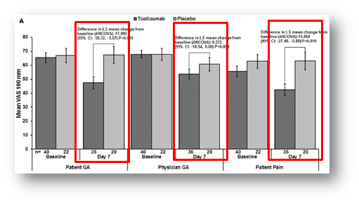

4. KEVはACTよりもIl-6受容体への親和性が高いので効果発現が早い？

KEVとACTの作用機序は同じですが、異なる薬剤のトラフ濃度の高低を議論しても意味がないように思います。重要なことは受容体にしっかりと蓋をできる抗体量ではないでしょうか？そうした意味では患者さんの状態に合わせてQWやIVでトラフ濃度を高めることもできるACTの方が理にかなった薬剤であると考えております。また、効果発現についても既にACTで同様のデータを持ち合わせています。
ROSE Study：DMARDs効果不十分RAを対象としたTCZ-IVの試験
7日目から患者関連指標が改善している。4週時に約7割が、臨床的に意義のある差（DAS28≧1.2）に到達した
